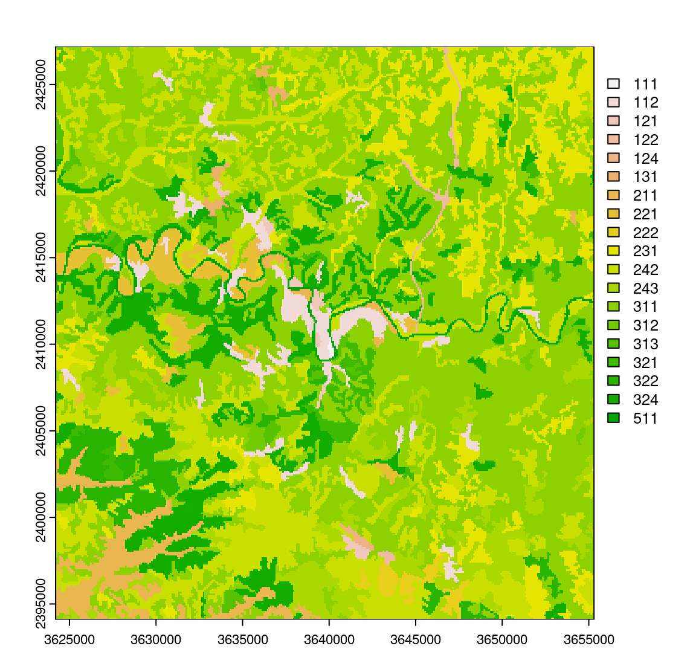

library(terra)#> terra 1.7.78elev <- rast("data/elevation.tif")
plot(elev)
La fonction plot() permet d’afficher un objet SpatRaster.
library(terra)#> terra 1.7.78elev <- rast("data/elevation.tif")
plot(elev)
Un raster contient toujours des données numériques, mais il peut aussi bien s’agir de données quantitatives que de données qualitatives (catégorielles) codées numériquement.
Précisez le type de données stockées avec l’argument type (type = "continuous" par défaut), pour les afficher correctement.
Import et affichage d’un raster contenant des données catégorielles : CORINE Land Cover 2018 (type d’occupation du sol) avec une résolution de 100m. Ces données ont été récupérées sur le site de Copernicus, le programme européen de surveillance de la Terre qui collecte et met à disposition des données issues de ses propres satellites (Sentinelles) d’observation. Une extraction centrée sur la commune de Cahors a ensuite été réalisée.
clc <- rast("data/clc_2018.tif")
# Affichage
plot(clc, type="classes")
Pour afficher les intitulés réels des types d’occupation du sol, ainsi que les couleurs officielles de la nomenclature CORINE Land Cover (consultables ici), vous pouvez procéder de la manière suivante :
intitule_poste <- c(
"Tissu urbain continu", "Tissu urbain discontinu",
"Zones industrielles ou commerciales et installations publiques",
"Réseaux routier et ferroviaire et espaces associés",
"Aéroports","Extraction de matériaux",
"Equipements sportifs et de loisirs",
"Terres arables hors périmètres d'irrigation", "Vignobles",
"Vergers et petits fruits",
"Prairies et autres surfaces toujours en herbe à usage agricole",
"Systèmes culturaux et parcellaires complexes",
"Surfaces essentiellement agricoles (interrompues par espaces nat.)",
"Forêts de feuillus", "Forêts de conifères", "Forêts mélangées",
"Pelouses et pâturages naturels",
"Landes et broussailles", "Végétation sclérophylle",
"Forêt et végétation arbustive en mutation",
"Cours et voies d'eau", "Plans d'eau"
)
couleur_off <- c("#E6004D", "#FF0000", "#CC4DF2", "#CC0000", "#E6CCE6", "#A600CC",
"#FFE6FF", "#FFFFA8", "#E68000", "#F2A64D", "#E6E64D", "#FFE64D",
"#E6CC4D", "#80FF00", "#00A600", "#4DFF00", "#CCF24D", "#A6FF80",
"#A6E64D", "#A6F200", "#00CCF2", "#80F2E6")
plot(clc,
type = "classes",
levels = intitule_poste,
col = couleur_off,
plg = list(cex = 0.7),
mar = c(3.1, 1.1, 1.1, 10)
)